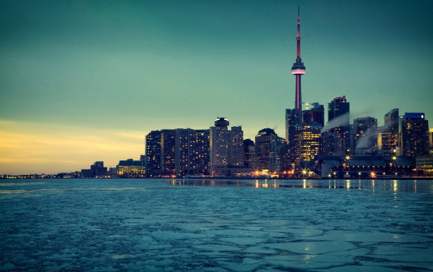

The top 10 safest cities
Safety is something many of us take for granted but the safer your home environment the healthier and happier you and your family are. Some cities provide residents with far less risk than others.
The Safe Cities Index 2015 is an Economist Intelligence Unit used to evaluate the overall safety of 50 cities, all of which are pre-selected by the EIU depending on regional representation and available data. These cities are selected based on four categories: digital security, infrastructure safety, personal safety and health security.
1. Japan,Tokyo
The number one safest city in the world is also the most densely populated. Tokyo, the capital of Japan performs strongest in digital security.
2. Melbourne, Australia
Melbourne is number one for livability and number 2 for infrastructure safety.
3. New York City
New York City is packed with people but it is the only US city to make the top 10 list for all categories. New York has gotten safer over time; back in 1990 there were 2,245 homicides, or 6 murders every single day. Since then the population has greatly increased and murders have dramatically declined to 335 in 2013, marking a historic low. New York ranks third for digital security, as do Los Angeles, San Francisco and Chicago.

4. Zurich, Switzerland
Zurich is ranked number one for both infrastructure security and health security.
5. Toronto, Canada
Toronto is not only one of the safest places to live. According to the Economist, Toronto is one of the best places to live in the entire world.

6. Sydney, Australia

7. Amsterdam, Netherlands
Overall, European cities do well in regards to safety, largely thanks to their universal health care systems, although some cities struggle to make it to the top of the list due to large population sizes. Around 780,000 people live in Amsterdam, making it one of the smallest cities to make the top 10.
8. Stockholm, Sweden
Stockholm is the only city outside of Asia to rank in the top 5 category for personal safety.
9. Osaka, Japan
Osaka beat out Tokyo in personal safety, although its infrastructure safety ranks very low compared to others that made the top 10 safest cities.
10. Singapore, Asia